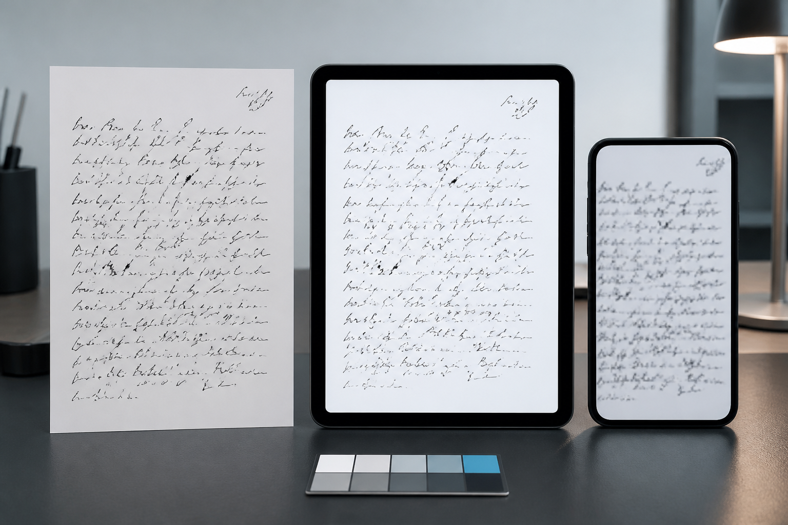
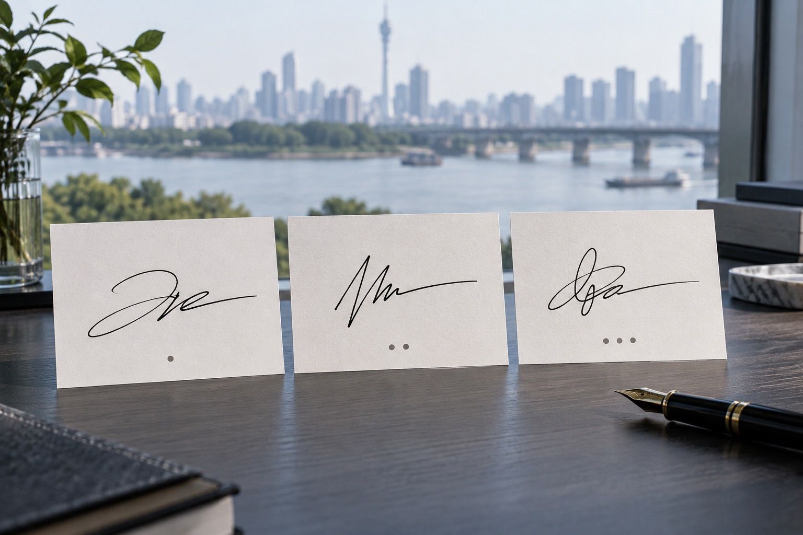
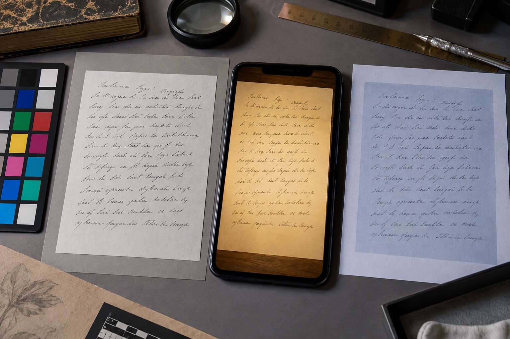
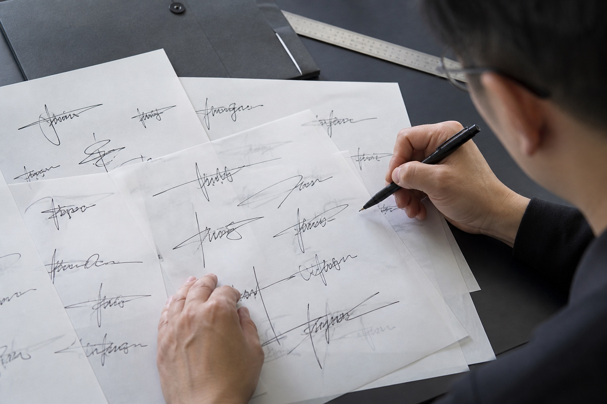

武汉手写图片颜色变了，会影响笔迹比较吗？
光线、扫描设置和压缩都会改变纸张与墨迹的颜色。武汉站说明模仿笔迹、模仿签名、模仿签字与笔迹鉴定图片应怎样保留拍摄信息。

光线、扫描设置和压缩都会改变纸张与墨迹的颜色。武汉站说明模仿笔迹、模仿签名、模仿签字与笔迹鉴定图片应怎样保留拍摄信息。

常用版本应结合实际文件判断，不以最工整的一张作为唯一标准。本文从武汉实际资料整理角度说明页面、版本与原图的保存方法。

日期与短句能说明签字当时的书写速度和页面位置，保留完整区域更有参照。本文从武汉实际资料整理角度说明页面、版本与原图的保存方法。

暖色、冷色和灰度版本可能改变墨迹观感，未经调整的原图应作为独立版本保存。本文从武汉实际资料整理角度说明页面、版本与原图的保存方法。

武汉站模仿签字新增主要版本确认项，围绕武汉模仿笔迹、模仿签名、模仿签字和笔迹鉴定更新服务资料。
武汉模仿签字多个版本怎么选？正式签名与快速签写比较，围绕武汉模仿笔迹、模仿签名、模仿签字和笔迹鉴定介绍资料准备方法。
围绕模仿笔迹、模仿签名、模仿签字和笔迹鉴定整理实用资料。

介绍服务内容、样本要求、价格因素和办理流程。

介绍签名服务范围、签字样本要求、费用与周期。

介绍笔迹鉴定范围、对比材料、费用周期和常见问题。

介绍手写文件、个人字体、字符数量和交付方式。